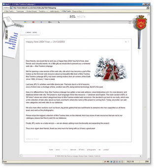

Bila Tserkva Linkpage (BTL) is an online community of Bila Tserkva citizens. Bila Tserkva is a nice little town in Kiev region, Ukraine.
This was one of my first serious web development projects that started in previous century and successfully lives until today. This site was also the first web site about Bila Tserkva town on the Internet.
Current version, 4.2b, is build based on Unix server utilizing MySql database and PHP scripting language. The site works as a dual mirror-like language resource supporting Ukrainian and English language. Current back-end engine can support an unlimited amount of languages.
Bila Tserkva Linkpage has a custom-built web site catalogue, custom-built lite discussion board, custom-built photo gallery script, lite version of news engine, and backend management console.
